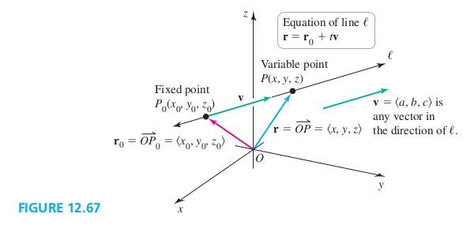

A function of the form r(t)=⟨x(t),y(t),z(t)⟩ may be viewed in two ways.
1. It is a set of three parametric equations that describe a curve in space.
2. It is also a vector-valued function, which means that the three dependent variables (x, y, and z) are components of r, and each component varies with respect to a single independent variable t (that often represents time),
Lines in Space
Two distinct points in \R^3 determine a unique line. Alternatively, one point and a direction also determine a unique line.

Let P(x,y,z) be a variable point on ℓ, v be nonzero vector ⟨a,b,c⟩ and a fixed point P0(x0,y0,z0). By vector addtion, we see that
Find the equation of the line that passes throught the point P0(1,2,4) in the direction of v=⟨5,−3,1⟩
Solution
r(t)=⟨1,2,4⟩+t⟨5,−3,1⟩
EXAMPLE 2 Equation of lines
Let ℓ be the line that passes through the points P0(−3,5,8), and P1(4,2,−1).
a. Find an equation of ℓ.
b. Find equations of the projections of ℓ on the xy- and xz-planes.
Solution
a. The direction of the line is P0P1=⟨7,−3,−9⟩. Therefore, with r0=⟨−3,5,8⟩. the equation of ℓ is
r(t)=r0+tv=⟨−3,+7t,5−3t,8−9t⟩
b. Set z=0 to get xy-plane projection, and set y=0 to get xz-plane projection.
Curves in Space
r(t)=⟨f(t),g(t),h(t)⟩=f(t)i^+g(t)j^+h(t)k^
where f,g and h are defined on an interval a⩽t⩽b. The domain of r is the largest set of values of t on which all f,g and h are defined.
Helix
Roller coaster
Slinky Curve
Limits and Continuity for Vector-Valued Functions
A vector-valued function r approaches the limit L as t approaches a, written
7. How do you evaluate t→alimr(t), where r(t)=⟨f(t),g(t),h(t)⟩?
Solution
t→alimf(t)=L1,t→alimg(t)=L2,t→alimh(t)=L3, then t→alimr(t)=⟨L1,L2,L3⟩.
9–24. Equations of lines Find equations of the following lines.
9. The line through ⟨0,0,1⟩ in the direction of the vector v=⟨4,7,0⟩
Solution
r(t)=⟨4t,7t,1⟩
11. The line through ⟨0,0,1⟩ parallel to the y-axis.
Solution
Direction vector, v=⟨0,1,0⟩. Equation, r(t)=⟨0,t,1⟩
13. The line through ⟨0,0,0⟩ and ⟨1,2,3⟩
Solution
Direction vection, v=⟨1,2,3⟩. Equation, r(t)=⟨t,2t,3t⟩
15. The line through ⟨−3,4,6⟩ and ⟨5,−1,0⟩
Solution
Direction vection, v=⟨8,−5,−6⟩. Euqation, r(t)=⟨−3+8t,4−5t,6−6t⟩
17. The line through ⟨0,0,0⟩ and is parallel to the line r(t)=⟨3−2t,5+8t,7−4t⟩.
Solution
Direction vection, v=⟨−2,8,−4⟩. Euqation, r(t)=⟨−2t,8t,−4t⟩
19. The line through ⟨0,0,0⟩ and is perpendicular to both u=⟨1,0,2⟩ and v=⟨0,1,1⟩.
Solution
Direction vector, w=u⋅v=∣∣∣∣∣∣i10j01k21∣∣∣∣∣∣=⟨−2,−1,1⟩
Equation, r(t)=⟨−2t,−t,t⟩
21. The line through ⟨−2,5,3⟩ and is perpendicular to both u=⟨1,1,2⟩ and the x-axis.
Solution
Direction vector, w=u⋅v=∣∣∣∣∣∣i11j10k20∣∣∣∣∣∣=⟨0,2,−1⟩
Equation, r(t)=⟨−2,5+2t,3−t⟩.
23. The line through ⟨1,2,3⟩ that is perpendicular to the lines r1(t)=⟨3−2t,5+8t,7−4t⟩, and r2(t)=⟨−2t,5+t,7−t⟩.
Solution
Direction vector, w=u⋅v=∣∣∣∣∣∣i−2−2j81k−4−1∣∣∣∣∣∣=⟨−4,6,14⟩
Equation, r(t)=⟨1−4t,2+6t,3+14t⟩.
25–28. Line segments Find an equation of the line segment joining the first point to the second point.
25. (0,0,0), and (1,2,3).
Solution
Direction vection, v=⟨1,2,3⟩. Equation, r(t)=⟨t,2t,3t⟩, for 0⩽t⩽1.
27. (2,4,8), and (7,5,3).
Solution
Direction vection, v=⟨5,1,−5⟩. Equation, r(t)=⟨2+5t,4+t,8−5t⟩, for 0⩽t⩽1.
29–36. Curves in space Graph the curves described by the following functions, indicating the direction of positive orientation. Try to antici pate the shape of the curve before using a graphing utility.
31. r(t)=costi+j+sintk, for 0⩽t⩽2π.
Solution
Graph 31.
33. r(t)=tcosti+sintj+tk, for 0⩽t⩽6π.
Solution
Graph 33.
35. r(t)=e−t/20sinti+e−t/20costj+tk, for 0⩽t<∞.
Solution
Graph 35.
37–40. Exotic curves Graph the curves described by the following functions. Use analysis to anticipate the shape of the curve before using a graphing utility.
38. r(t)=2costi+4sintj+cos10tk, for 0⩽t⩽2π.
Solution
Graph 38.
41–46. Limits Evaluate the following limits.
41. t→π/2lim(cos2ti−4sintj+π2tk)
49. Point of intersection Determine the equation of the line that is perpendicular to the lines r(t)=⟨4t,1+2t,3t⟩ and R(s)=⟨−1+s,−7+2s,−12+3s⟩ and pass through the point of intersection of the line r and R.
Solution
Direction vector, v=∣∣∣∣∣∣i41j22k33∣∣∣∣∣∣=⟨0,−9,6⟩.
Intersection
{4t=−1+s1+2t=−7+2s⇒{t=1s=5
The point of intersection is (4,3,3).
Equation of the line, l(t)=⟨4,3−9t,3+6t⟩
50–55. Skew lines A pair of lines in \R^3 are said to be skew if they are neither parallel nor intersecting. Determine whether the following pairs of lines are parallel, intersecting, or skew. If the lines intersect, determine the point(s) of intersection.
51. r(t)=⟨1+6t,3−7t,2+t⟩, R(s)=⟨10+3s,6+s,14+4s⟩
Solution
⎩⎪⎨⎪⎧1+6t=10+3s3−7t=6+s2+t=14+4s⇒{t=0s=−3
These two lines intersect at point (1,3,2).
56–59. Domains Find the domains of the following vector-valued functions.
57. r(t)=t+2i+2−tj
Solution
{t+2⩾02−t⩾0⇒−2⩽t⩽2
60–63. Line-plane intersections Find the point (if it exists) at which
the following planes and lines intersect.
61. z=4;r(t)=⟨2t+1,−t+4,t−6⟩
Solution
t−6=4⇒t=10. The intersection point is (21,−6,4).
67. Matching functions with graphs Match functions a–f with the appropriate graphs A–F.
Solution
a -> E. (A line)
b -> D. (Parabolic like)
c -> F. (A circle in xy-plane and z=2)
d -> C. (Circular helix, elongated along the x-axis)
e -> A. (Closed curve)
f -> B. (Circular helix, elongated along the y-axis)
75. Graph the curve r(t)=⟨21sin2t,21(1−cos2t),cost⟩ and and prove that it lies on the surface of a sphere centered at the origin.
Solution
Graph 75. To prove the curve lies on the surface of a sphere centered at the origin, we need to show that the magnitude of every point on the curve should be constant.